| Match Report - 11 June 2011 |
|
|
|
|
|
|
|
|
|
|
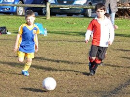
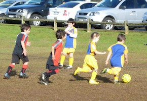
The U6 Green were very happy that the wet weather held off so they had the
opportunity to play the last game of Round 1 against the Macquarie Dragons.
The game was fast faced and the children received a lot of unnecessary banter
from the opposition players which was off putting to them at times especially
when taking shots at goal.
The U6 Green were very happy to show those dragons that they could put their
fire out with skill and pace. Christian lead the team in to the lead with a
couple of great running goals and Jasmine also scored an excellent goal from
a great pass from her team before the dragons equalised to a 3-3 draw. The game
was rough and the team did very well to keep focused. Elijah scored a goal from
an interception off a dragons free kick. Will showed no signs of slowing down
and exhibited his skills in dribbling and passing. William made some good tackles
and Blake was strong in defence. In the last few minutes Christian showed his
power kick which deflected off the Macquarie defence into the goals. Player of
the week was awarded to Christian for a great game.
- Sarah Robson
|
|
|
|
U6 Purple A
|
|
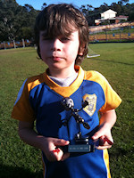
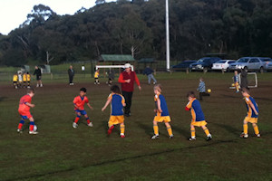
It was a cold morning but we were all pleased the rain stopped for the game!
The boys had a very even match with almost equal possession of the ball. Cameron
had several good saves and played well all game. Eli made some great runs up the
field and showed excellent control of the ball. Luke had many near misses at goal,
showed us some good, strong kicks and had a close encounter with the net. Alex
was right in the thick of things and was excellent in defense as well as having
a near miss at a goal. The opposition scored the only goal of the game in the
first half despite great attacking from Liam who worked hard to stay with the
ball and was 100% focused on the game. Ethan and Lachlan were excellent in defense
and made several good clearing kicks and saves.
Player of the week went to Liam for his concentration and dedication in staying
with the ball, he played a super game.
Special thanks to Tracey for being the last minute orange provider - there would
likely be a sit down protest if there were no half time oranges, so thanks!
Also, special thanks to Cameron for playing on even though he wasn't feeling 100%
- Nerradene Wolken
|
|
|
|
U6 Purple B
2 - 3
|
|
We were enthusiastic today with our early start at Pidding Pk. We had the
possession for most of the game and were trying harder to attack the ball
not just wait and watch.
Unfortunately for us we had a few to many near misses for the goals including
Ethan's big kick that hit the post.The other team had some lucky kicks and
with a couple of missed tackles had us beat.
In the end the score was 2-3 to them with goals scored by Reilly and Madison.
Encouragement certificate went to Madison and Player of the week trophy went
to Georgia.
- Meryl
|
|
|
|
U6 Red A
2 - 4
|
|
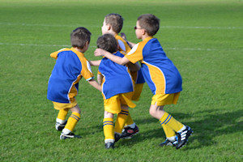
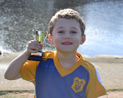
The boys played very well against a strong All-Saints side who attacked
consistently throughout the match. Our first goal was scored by Ben with
a second, truly magical, goal by Josh.
Toby and Hayden tried hard and supported them well up front. Jake was brilliant
in defence and single-handedly denied All-Saints many scoring opportunities.
Absent for this game, and sorely missed, was Ollie who’s resting up for a strong
come-back next game.
Well done to all the boys who did so well to keep the final score so even.
Player of the Match: Toby Pearson
- Lenore Pearson
|
|
|
|
U6 White C
1 - 2
|
|
In almost sunshine we played Putney Rangers and conceded 2-1. The boys played
well and chased the ball almost scoring a number of times. There game is coming
together and it is fantastic to see them begin to use the skills they learn
at training.
- Lisa Mach
|
|
|
|
U7 White A
3 - 0
|
|
What a great game. Again everyone played well. Our top goal scorer continues his
run with another 2 goals to Cameron and as hard as he tries to pass it so other
team mates can score it just hasn't worked with lots of narrow misses. The third
goal of the game was scored by Hayden with a fabulous kick just short of half way.
Loki got himself nice and dirty today with plenty of slides and tumbles. He also
only just missed the goal three times. So close! Emily continued to shine this
week, not only did she stop plenty of balls from going ou,t her passing to her
team was working really well and she always does it with a beautiful smile.
Matthew & Josh continue to improve each week, both of them getting into the
middle of it and kicking with confidence.
Our player of the match went to Idan. He too has continued to improve each week,
gaining more and more confidence. He listens to everything he is told and without
fail tries his best to do exactly what he is asked. When the ball is kicked in
from the side or corner he jumps up front and carefully watches the ball and is
now intercepting most of these kicks. Great work Idan.
- Kirrilee
|
|
|
|
U7 White C
5 - 0
|
|
Everyone on the field was giving it their best on this very cold morning up at
Pidding Park. North Ryde led the game all the way with some wonderful passing
and goal shooting!
The skills and moves we are learning at training are really starting to transpire
in the weekend games and the most important thing is that everone is having a fun
time. It is great to watch from the side lines the boys delight and praise for
each other when a goal is scored, as they all contribute to this in one way or
another! Well done to the team... coach Zhiron, manager Carmel and parents!
Man of the Match was Hugo!
- Susie Manning
|
|
|
|
U8 Brown
1 - 5
|
|
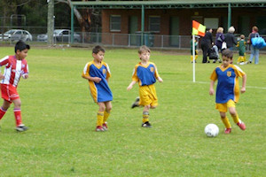
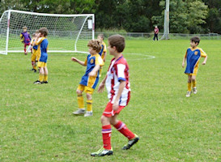
This was the first game at the Pennant Hills complex and wasn't it chilly to start
the long weekend. Our team was greeted by a very professional soccer club, with
the team on field in distinct positions 5 minutes prior to their game commencing,
this was the marking for an excellent game.
The WPH Cherrybrook team were clearly well practiced in team plays and positioning
and it was great for the U8 Brown team to experience. The team had some excellent
runs down the field and all players gave 100% in attack and defence. Issak was
goalie in the first half and Ben was goalie in the second, both boys made some
great saves, although 4 of the 5 goals were just under the goal cross bar and were
impossible to save.
The U8 Brown team will be focusing on more positional play for round 2 of the
season. Sam scored an excellent goal with the final score 5-1. Player of the week
was awarded to Issak for an excellent game both in the goals and on the field with
strong ball skills and fast feet. Well Done everyone!
- Sarah Robson
|
|
|
|
U8 Yellow
2 - 4
|
|
Although Cloudy, and a little on the chilly side, the team gets warmed up with
pre-match practice against Chris and Damien, this week’s goal keepers. The match
this week is out at Glenhaven against Normanhurst FC. Play starts and the game
gets under way. Plenty of attacking and defending for both teams. Everyone is
getting a piece of the action including both goal keepers. Four minutes in, the
deadlock is broken. North Ryde devise a run of play down the southern sideline
and through to Fletcher for the opening goal of the match. A few minutes later
and Kate scores the second goal of the match, which is her second goal for the
season. With the scoreline favouring North Ryde two nil, the whole game now
tightens up. Normanhurst step up a notch or two and become much more difficult
to contain and finally put one in the net past Chris a few minutes from half time.
Second half commences, with North Ryde, although very enthusiastic, are finding
the game much more demanding. Normanhurst obviously had some pretty serious moo
juice that lifted their game enormously. Within the first few minutes of the
second half, they’d countered with many attacks at goal, resulting in two very
quick goals. With the scoreline favouring Normanhurst to the tune of three goals
to two, North Ryde switched in the Supercharger (Rev head lingo for those that
understand a true engine - V8), and really turned the game around. On one
occasion, Jacob skirted around the entire Normanhurst team, scampered down the
southern side line, and sent the ball right into the post at a blistering pace.
An absolute blinder. A real pity it didn’t hit the back of the net. With spirits
lifted, one could be forgiven in thinking time travel actually did exist. The
next run of play, was almost a carbon copy of the previous, only this time,
replace Jacob with Harry. A few minutes to go. Normanhurst have the upper hand,
but North Ryde continue to dominate play inside the opposition half. Jacob has
at least two more attempts at goal, with huge kick from almost halfway going
straight over the goal posts. Almost full time. Normanhurst get a wayward ball
inside the North Ryde area and secure the last goal of the match.
Final score Normanhurst FC four (4) North Ryde two (2).
Goal Scorers:
1. Fletcher Gusse (1), 5 minutes into match
2. Kate Kennedy (1), 9 minutes from half time
Player of the Match - Harry Grimes
- David Watt
|
|
|
|
U9 Division 3
0 - 1
|
|
It was time to make our way out to Glenhaven where we were greeted with very
chilly conditions. The game was played on a pitch that was fairly unfamiliar
to the boys as the goals were much bigger and the grass was long and slow.
The weather must have affected the boys as they didn't seem to have the same
drive that we have seen in the last couple of games. A few minutes in and they
were stuck defending quite heavily. So much so that I don't think the boys got
a shot in for the whole of the first half. Luckily our defence was strong enough
to keep Glenhaven out as well.
The second half meant we were not as lucky and right at the start Glenhaven put
an early goal on the board. The rest of the half was some more heavy defending
with not much sign of the attacking runs that were starting to work so well in
previous games.
We did hold Glenhaven out for the rest of the game which is a credit to the boys
defending ability. A couple of shots were made in the second half but we did not
really look like scoring. Overall, certainly not our best performance by the team
but we were beaten by a better team on the day. Hopefully a good learning
experience and giving us some more to work on during training.
Final score was 1 nil and Nyxyn was awarded the certificate for consistent
running. Next week we battle the top team in the table. I am confident the boys
will lift for the occasion.
- Darren Mason (Manager)
|
|
|
|
U11 Division 1
3 - 0
|
|
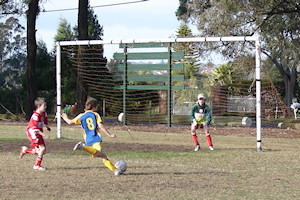
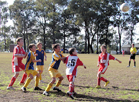
The sodden Annangrove Park in Kenthurst was granted a temporary reprieve from the
wet and inclement weather of late, long enough at least to allow North Ryde and
Kenthurst to lock horns in their first encounter of the season. It was never going
to be an easy game, as is often the case when you wander into the Hills District,
and Kenthurst certainly made sure that we got our money's worth.
The game started at breakneck speed and Kenthurst had the lion's share of ball
possession and attacking play for most of the first half. It was fortunate, and
a bit against the run of play when Lachlan took a corner kick that scraped past
the left-hand post and deflected off the unsuspecting keeper into the back of the
Kenthurst nets. It was a well-judged kick and it earned North Ryde a 1 - 0 lead
that they retained until the halfway mark.
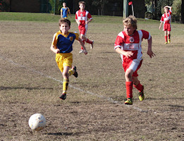
Coach David took the team aside at the break to discuss some of the finer points
of life, and they came back in the second half with a lot more vigour and
determination than they had set out with in the first half. There were more
constructive conversations between the players on the field and the defensive
and midfield structures were more cohesive in managing their game plan. The game
seemed like it could go either way and Kenthurst were perhaps unlucky not to
convert any of the many opportunities they had on the our goals. Eli latched
onto a through ball early in the second half and struck it with impunity into
the right-hand corner of the nets to give North Ryde a 2 - 0 lead.
The battle raged on unabated, and it became a case of three steps forward and
two back for both sides. There was little margin for error. A ball that drifted
too far away from the feet, for instance, would give the opposition enough
opportunity to reverse the course of play and undo all of the hard work and
distance covered over the preceding few minutes and our defences were put to
the test over and over again. Our passing game had settled down and started to
work in our favour though, and Sam was the final link in one of our goal-bound
surges to nail the ball into the back of the nets and give North Ryde the winning,
and final score of 3 goals to nil.
Well done to both teams for an entertaining and tough game of football, to the
defence for their tireless efforts to move the ball away from the goals, the
midfield who were contantly called on for both defence and to feed the ball to
the front, and the forwards who took their chances and opportunities to score.
Great effort North Ryde!
- Mark Howard
|
|
|
|
U11 Division 3
2 - 3
|
|
It was very much a game of two halves. Kenthurst started off very enthusiastically
and scored three times in the first 20 minutes. Even Robert’s strong defence
couldn’t stop the Kenthurst attack which came through with too many players to
stop. Unlucky bounces on the uneven field also created problems. At the other end,
Massie, Ben and then Zac couldn’t find a way to the goal. Then, late in the first
half, the flow changed. Finally, we found some room near the Kenthurst goal and it
was Ahmed who booted in a great goal; his first of the season.
In the second half we had the better chances, but Kenthurst defended well. Zac
finally succeeded with one of his solo runs and gave the goal-keeper no chance.
It looked like we might even up the score with Benyad and Sam, among others
playing their hearts out, but we just couldn’t find the right combination. Several
substitutions by Kenthurst, including swapping the goal-keeper two minutes from
full-time, didn’t help with keeping the pressure on. However, it was the spirit
shown by North Ryde, who never doubted they could get back into the game, even
when 3-0 down, that was the highlight of the day.
- Martin Borri
|
|
|
|
U15 Division 2
0 - 0
|
|
For the eight game of the year, with a very wet day and an 11:00am start, the boys
played at Holland Oval no1 at Glenhaven against Glenhaven SC, who are currently
eighth in the GHFA competition.
First, Tom and Alex were not playing as they were both sick. On behalf of the team
and parents, we all wish them a speedy recovery and we missed them both.
The result for this game was 0-0, a frustrating game for fans of both teams as I
am sure they would have loved to see a goal.
They where many highlights, which are below in chronological order:
- Cameron had a excellent shot at goals
- Daniel excellent shot, just over goals
- Daniel to Lewis, goal keeper just got to it
- Kyle to Lewis, goal keeper got it
- Cameron goal shot, after rebound Kyle had a shot
- Lewis another shot, just wide
- Harry great pass to Kevin, had a shot
- Daniel great shot, wide
- Cameron pass to Kevin, another shot
- Half time
- Lewis turns the ball to Hayden, another shot
- Harry kick to Daniel, another shot
- Cameron excellent free kick
- Harry great shot
- Cameron excellent cross
- Chris excellent dribble for the length of the field
- Ben had a strong game in defence
- Luke played well and was strong in defence
- Manav defended well and with Ben and Luke contributed to the strong team defence
- Kevin was back and put in his best game for the season, welcome back.
- Harry also had an excellent game at rear mid with many strong and well placed kicks. Also his best game of the season.
- Mitchell worked hard in shutting down the Glenhaven forward and cleared the ball very well, great game.
- Nat played a whole game in goals and was never troubled!
The player of the match, the ‘cupcake’ trophy was presented by Frances Hesse to
Mitchell.
- 1 point Kevin
- 2 points Harry
- 3 points Mitchell
I would like to thank all the parents who came to support our team... you do make
a loud difference!
Pat on the back for the boys. As the team has dropped into a lull, as far as
scoring goals, over the last couple of weeks, I thought we should really encourage
our boys with their recent efforts. So please give your boy a big pat on the back
because they deserve it.
- Joe Rosenfels
|
|
|
|
All Age Division 17
2 - 3
|
|
In round 10 North Ryde took on Redbacks FC. Due to poor weather in round 3 these
teams had not met however they had both been having difficult seasons with
victories hard to come by.
The match started well for North Ryde with good possession and strong challenges
seeing them taking the game to their smaller opposition. This early dominance
was rewarded with a goal after the Redbacks keeper was caught in two minds after
a shot came in from around the 18 yard box. The shot did not have much power but
with the North Ryde forwards attacking the ball the keeper was drawn to them in
case of a touch but when none materialised the ball continued and ended up in
the back of the net.
North Ryde continued to create half chances showing a willingness to seize the
game often lacking this season, but against the run of play the Redbacks stole
an equaliser after a defensive error from North Ryde and it was 1-1 with
everything to play for.
As the game moved towards half time it was a lot more even with both teams keen
to press for a goal but it was another defensive lapse that saw Redbacks pull
ahead and go 2-1 up just before the break. North Ryde, despite having greater
possession and chances needed to pick themselves up from here. At the break it
remained 2-1.
After half time North Ryde tried again to establish the dominance that they had
early in the game but with the Redbacks buoyed by their goals it was still quite
even with both sets of midfielders trying to establish some dominance. For a
period North Ryde began to again have the better of things and grabbed the
equaliser to make it 2-2 with the game again anyones to take. Some good work
down the left side (where much of the North Ryde attach was centred) saw a good
ball into the middle and a composed finish completed off a well executed attack.
As the teams sought out the winner both teams started to become frustrated at
each other and the referee with challenges becoming more intense and soon there
were several players on both sides with yellow cards.
With about 20 minutes left however the moment came that decided the match.
Redbacks FC won a corner and a fine set piece saw possibly their best player
seal a solid performance with a good header from 6 yards that put Redbacks
ahead 3-2 and, despite North Ryde's efforts, sealed the game.
North Ryde should be looking forward to the rematch however when the round 3
game is played out in July. Hopefully they can pick up some points before then
to ensure that match is for more than simply pride.
- Simon
|